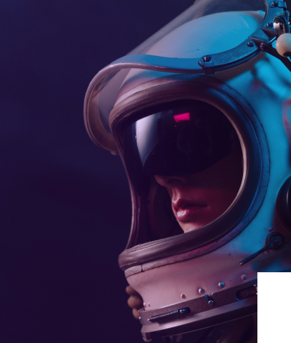
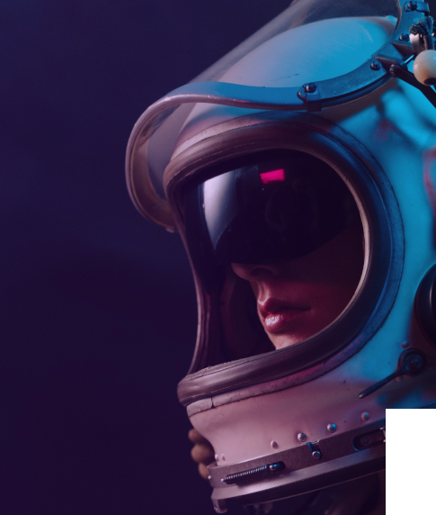

О курсе
 

Как попать на курс
1 этап
Подаёте заявку на сайте или по телефону +7 (950) 603 77 – 37, формируете комплект документов: копия паспорта (2,3 стр. + прописка). Заполняете: личный лист + согласие на обработку персональных данных.
2 этап
Проходите врачебно-летную экспертную комиссию гражданской авиации (хирург, дерматовенеролог, терапевт, невролог, стоматолог, психолог) и получаете заключение, подтверждающее допуск к полетам.
3 этап
Подписываете договор на оказание услуг, оплачивайте первоначальный взнос. Отправляете документы для поступления, указанные ниже, на электронную почту kosmopolet@gmail.com. Лично принести полный комплект документов можно по адресу: пр. Москва ул. Большая Печерская 12 каб.13
Требования к здоровью
Общие требования
Кандидаты должны быть максимально здоровыми, любые патологии и даже «несерьезные» заболевания, которые кажутся незначительными и протекают бессимптомно на Земле – это уже практически 100% отказ в рассмотрении кандидатуры. Особенно высокие требования предъявляются к состоянию вестибулярного аппарата. Физическая подготовка проверяется сдачей нормативов: кандидатам предлагается продемонстрировать свою скорость, силу, выносливость, координацию, ловкость.
Вы не уверены что подходите?
Получите бесплатную консультацию от наших специалистовИли
Преподаватели курса
“Бесконеность - не предел”
Ведет курсы
- Астрономия для начинающих
- Физика в космосе
- Биология в космосе
- Теория космических путешествий
Дмитрий Иванович Васильев
Кандидат наук, преподаватель МГУ астроном, физик
“Сила - это не только руки - это еще и ноги”
Ведет курсы
- Астрономия для начинающих
- Физика в космосе
- Биология в космосе
- Теория космических путешествий
Владислав Георгиевич Осипов
Летчик испытатель 2 полета в космос 5 выходов в открытый космос
Анна Семеновна Ковальчук
Психолог в собственной клинике Кандидат философских наук
“Заставлю вас думать свободно”
Ведет курсы
- Эмоции и их контроль
- Психология космоса
- Страх как ваша гордость
Преподаватели курса
Дмитрий Иванович Васильев
Кандидат наук, преподаватель МГУ астроном, физик
Ведет курсы
- Астрономия для начинающих
- Физика в космосе
- Биология в космосе
- Теория космических путешествий
Владислав Георгиевич Осипов
Летчик испытатель 2 полета в космос 5 выходов в открытый космос
Ведет курсы
- Астрономия для начинающих
- Физика в космосе
- Биология в космосе
- Теория космических путешествий
Анна Семеновна Ковальчук
Психолог в собственной клинике Кандидат философских наук
Ведет курсы
- Эмоции и их контроль
- Психология космоса
- Страх как ваша гордость
Программа курса
Модуль 1
Теория космических путешествий
Получите знания, основной целью которых является представление о возможности путешествия за пределы атмосферы: на некоторое время стать космонавтом, и использовать космическое путешествие для своих личных или исследовательских миссий.
8 занятий 16 часов
Физика и биология в космосе
В этом модуле познакомитесь с особенностями биологии и физики в космическом пространстве. Рассмотрите и изучите на основе экспериментов действие основных законов физики в космосе. Выявите что биология, физика и космос - неразделимо связаны.
3 занятия 6 часовПсихология космоса
Познакомитесь с психологическими особенностями поведения человека при осуществлении космических полётов. Изучите особенности трудовой деятельности человека в различных ситуациях, связанных с подготовкой к различным действиям и работой в космическом пространстве, в условиях, максимально приближенных к реальным.
4 занятия 8 часовМодуль 2
Астрономия для начинающих
Изучите базовые понятия современной астрономии, её основные достижения. Курс «Астрономия для начинающих» содержит систематизированное изложение сведений об основных законах Вселенной и всех процессах, происходящими внутри неё.
4 занятия 15 часовЭмоции и их контроль
Рассмотрите широкий круг эмоциональных состояний и их влияния на поведение и работоспособность человека, что относитсяк числу остро актуальных проблем космической медицины, ведь в условиях космического полета, и жизни на космических объектах или других планетах человек будет испытывать самые различные, но всегда сильные и глубокие чувства.
5 занятий 20 часовКосмическая физкультура
Пройдете физическую подготовку космонавтов, изучите упражнения для облегчения дискомфорта, однообразного положением пилота, для компенсации невесомости, для поднятия возбудимости ЦНС, для восстановления мышечной силы и координации движений.
4 занятия 15 часовМодуль 3
Практические полеты в невесомости
Пройдёте вестибулярную тренировку. Она призвана облегчить период адаптации к невесомости в первые несколько суток полёта и сделать его как можно короче. Используемое оборудование - «кресло Барани» (минута вращения — минута отдыха).
4 занятия 15 часовСтрах как ваша гордость
Пройдете стресс тесты по различным методикам. Научитесь поддерживать свое психическое состояния во время полета и пребывания в космическом пространстве, ведь круг проблем поведения и работоспособности в сложных условиях очень широк.
5 занятий 20 часов
Подготовка к
полету
На этом этапе: доведение задач летной подготовки на предстоящий месяц, изучение методики и условий выполнения полетных заданий, запланированных на месяц, разработка и моделирование новых полетных заданий с выполнением необходимых расчетов.
4 занятия 15 часов